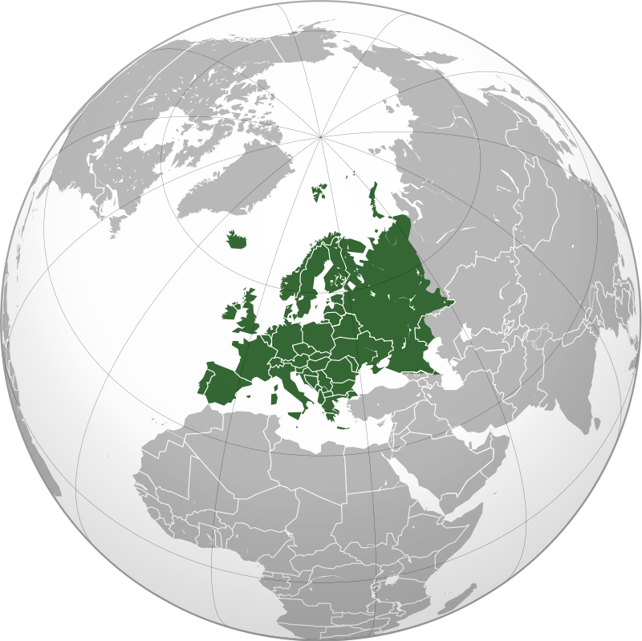

Asia Trip
Asia (/ˈeɪʒə/ (listen), UK also /ˈeɪʃə/) is the largest continent[a][10][11] in the world by both land area and population.[11] It covers an area of more than 44 million square kilometers,[b] about 30% of Earth's total land area and 8% of Earth's total surface area. The continent, which has long been home to the majority of the human population,[12] was the site of many of the first civilizations. Its 4.7 billion people[13] constitute roughly 60% of the world's population, having more people than all other continents combined.[14]
Europe Trip
Europe is a continent[a] comprising the westernmost peninsulas of Eurasia,[12][13] located entirely in the Northern Hemisphere and mostly in the Eastern Hemisphere. It shares the continental landmass of Afro-Eurasia with both Africa and Asia. It is bordered by the Arctic Ocean to the north, the Atlantic Ocean to the west, the Mediterranean Sea to the south, and Asia to the east. Europe is commonly considered to be separated from Asia by the watershed of the Ural Mountains, the Ural River, the Caspian Sea, the Greater Caucasus, the Black Sea and the waterways of the Turkish Straits.[14]
The Middle East (term originally coined in English [see § Terminology][note 1]) is a geopolitical region encompassing the Arabian Peninsula, the Levant, Turkey, Egypt, Iran, and Iraq. The term came into widespread usage as a replacement of the term Near East (as opposed to the Far East) beginning in the early 20th century. The term "Middle East" has led to some confusion over its changing definitions,[2] and being seen as too Eurocentric.[3] The region includes the vast majority of the territories included in the closely associated definition of West Asia, but without the South Caucasus, and additionally includes all of Egypt (not just the Sinai) and all of Turkey (not just the part barring East Thrace).
Oceania
Oceania (UK: /ˌoʊsiˈɑːniə, ˌoʊʃi-, -ˈeɪn-/ OH-s(h)ee-AH-nee-ə, -AY-, US: /ˌoʊʃiˈæniə/ (listen) OH-shee-AN-ee-ə, /-ˈɑːn-/ -AHN-)[4] is a geographical region that is described as a continent in some parts of the world. It includes Australasia, Melanesia, Micronesia, and Polynesia.[5][6] Spanning the Eastern and Western hemispheres, Oceania is estimated to have a land area of 8,525,989 square kilometres (3,291,903 sq mi) and a population of around 44.4 million as of 2022. Oceania is described as a geographical region in most of the English-speaking world, but outside of the English-speaking world, Oceania is described as one of the continents. In this model of the world, Australia is only seen as an island nation contained inside of the continent of Oceania, and not a continent by itself. When compared to the other continents, Oceania is the smallest in land area and the second-least populated after Antarctica.
Add: Bauang, La Union
cp: 0926-2761087
email address: jeff.abuan05@gmail.com